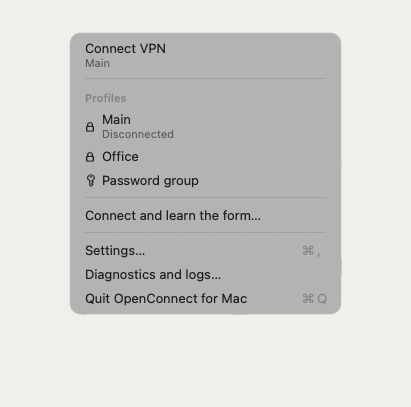

Work VPN in your Mac menu bar
An open-source client for AnyConnect-compatible gateways, built on OpenConnect.

Password and code filled in for you
Password and one-time code come from Keychain, KeePassXC or your own command. The sign-in window shows up only when a person is needed.
You choose the networks, not the admin
Only the networks in your profile go through the tunnel; everything else, home network included, goes the usual way. Switch them from the menu without reconnecting.
Smart DNS: yours and the company’s at once
Work domains go to the company DNS, everything else to yours. System DNS stays untouched.
An app, not a terminal
A native macOS menu: connect, pause, switch networks, read logs. A setup wizard and a profile editor; the CLI is there for automation.
Survives sleep and network changes
The supervisor brings the connection back after sleep, Wi-Fi changes and dropped links, without opening a sign-in window on its own.
Install
brew tap ValeraGin/ocbar brew trust ValeraGin/ocbar brew install ocbar sudo ocbar install ocbar app start
Homebrew builds ocbar on your Mac. The first command with sudo installs the network helper; then the setup wizard adds your gateway.
macOS 13+ · Command Line Tools · your own AnyConnect-compatible gateway